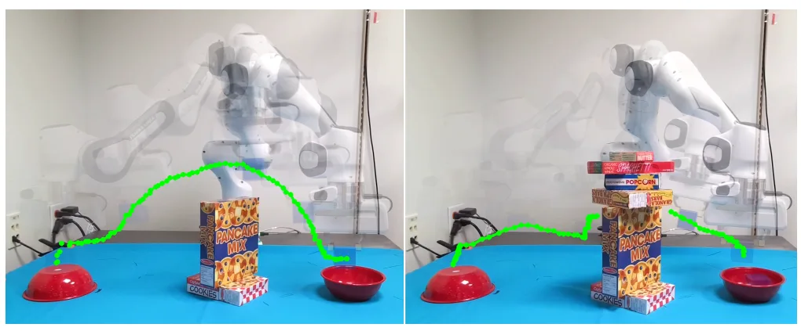
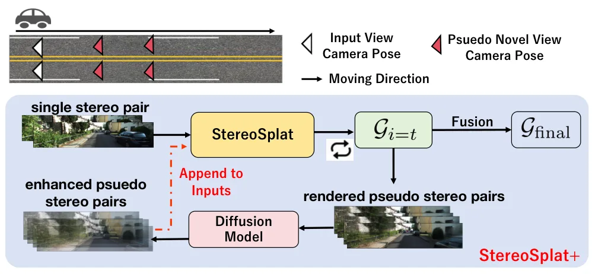

新论文 · 日期 2026-07-10 · score 13 · cs.CV
作者：Timofei Kozlov, Dmitrii Maliukov, Andrey Marchenko, Miguel Altamirano Cabrera
评分 9.4/10
3DGS-SLAMORB-SLAM3在线重建开放词汇VR
一句话工作总结：把 ORB-SLAM3、在线 3DGS、VR 浏览与开放词汇语义交互接成实时系统，重点解决真实噪声输入下的增量重建。
本文提出一套集鲁棒在线 3D Gaussian Splatting、实时 VR 探索与语音驱动视觉语言模型交互于一体的架构。系统不依赖干净深度或外部位姿，而是将 ORB-SLAM3 位姿估计与面向真实噪声数据的在线 Gaussian 重建结合；VR 管线支持沉浸式浏览增量重建，语义模块可转写语音命令、生成场景描述并记录兴趣点。相较在线 Gaussian Splatting 基线，该方法在自建数据和 TUM-RGBD…
We present a novel integrated architecture for robust online 3D Gaussian splatting, real-time VR exploration, and speech-driven Vision-Language-Model interaction. Unlike methods assuming clean depth or externa…

新论文 · 日期 2026-07-10 · score 11 · cs.CV
作者：Junyuan Deng, Heng Li, Kejie Qiu, Lingteng Qiu
评分 9.2/10
Structure-from-Motion三维基础模型全局优化Bundle Adjustment大规模重建
一句话工作总结：用基础模型提供几何先验和稠密匹配，再以跨窗口特征轨迹、运动平均与 BA 恢复可扩展的全局一致性。
Glob3R 将三维几何基础模型的前馈预测纳入全局 SfM 优化。方法冻结 Pi3X 主干，增加轻量稠密匹配头来预测参考帧与邻近视图间的 image warps，再将其转换为稀疏而可靠的多视图特征轨迹，为全局优化提供对应约束。关键帧滑窗关联负责跨重叠窗口传播轨迹与相对位姿，最后通过全局运动平均和 bundle adjustment 精化相机位姿、减少尺度不一致并恢复稠密几何。实验覆盖室内、室外、大规模驾驶和无序 S…
Recent 3D geometric foundation models, such as VGGT, provide robust feed-forward 3D reconstruction by directly predicting camera poses and 3D scene points from input images. However, their results remain inacc…

新论文 · 日期 2026-07-10 · score 11 · cs.RO, cs.CV
作者：Siddarth Jain, Ho Jin Choi
评分 8.9/10
3D Gaussian Splatting动态重建反应式控制控制屏障函数机械臂避碰
一句话工作总结：从动态 3DGS 地图导出连续可微距离度量，并通过控制屏障函数驱动机械臂实时避碰。
SplatCtrl 面向未知且持续变化环境中的机械臂避碰，把实时场景重建和反应式运动生成统一起来。系统基于 3DGS，引入 voxel filtering 与动态 Gaussian relocation，从 RGB-D 流高效重建并适应环境变化；同时从各向同性 Gaussians 推导连续 signed distance functions，得到稳定、可微的碰撞概率估计，并将其纳入 control barrier…
Robotic manipulators excel in structured environments but face substantial challenges in unstructured and dynamic settings. This paper presents SplatCtrl, a unified framework for real-time scene reconstruction…

新论文 · 日期 2026-07-10 · score 10 · cs.CV
作者：Zihua Liu, Masatoshi Okutomi
评分 8.4/10
双目重建3DGS前馈重建扩散模型KITTI-360
一句话工作总结：从一个双目对开始，用“渲染—扩散修复—回馈”循环扩展观测覆盖，提升遮挡区几何和外推视角质量。
StereoSplat+ 研究仅凭单次双目观测进行因果、render-ready 3DGS 重建。其基础模型 StereoSplat 可接收数量可变的带位姿双目对，通过 cost-volume 分支、triplane 3D volume 分支与连续位姿编码融合几何线索。单次双目推理时，系统先预测 3DGS，再渲染新双目视图，用一步 diffusion enhancer 修复后回馈模型，渐进更新 Gaussian 场…
Recent advances in 3D Gaussian Splatting (3DGS) have enabled high-quality, render-ready scene representations for novel-view synthesis. However, most existing 3DGS pipelines rely on multi-view observations (or…

新论文 · 日期 2026-07-10 · score 9 · cs.CV, cs.AI
作者：Filippo Ziliotto, Luciano Serafini, Lamberto Ballan, Tommaso Campari
评分 8.2/10
共视性VGGT可见图SfM 前端几何基础模型
一句话工作总结：探测 VGGT 的逐层共视能力，并用轻量 MoE 头输出经校准的共视概率，直接构造 SfM/SLAM 可见图。
本文分析 VGGT 是否隐式编码图像共视性。探测结果显示，早期层形成三维感知场景表示，后期层则呈现专门的共视推理能力，其中 L17 对不共视图像对表现为稳定的负锚点。基于这一发现，Co-VGGT 冻结 VGGT，仅训练不足 750 万参数的逐层 mixture-of-experts head，从 RGB 图像对判断共视关系。在 Co-VisiON 上，该模型超过人工标注基线和既有方法；其 pairwise 预测校准…
A fundamental challenge in 3D reconstruction and robotic localization is co-visibility: determining which image pairs share overlapping visible surfaces, particularly in scenarios with minimal overlap. We demo…